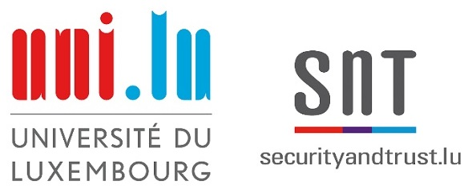
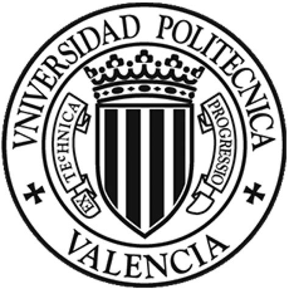
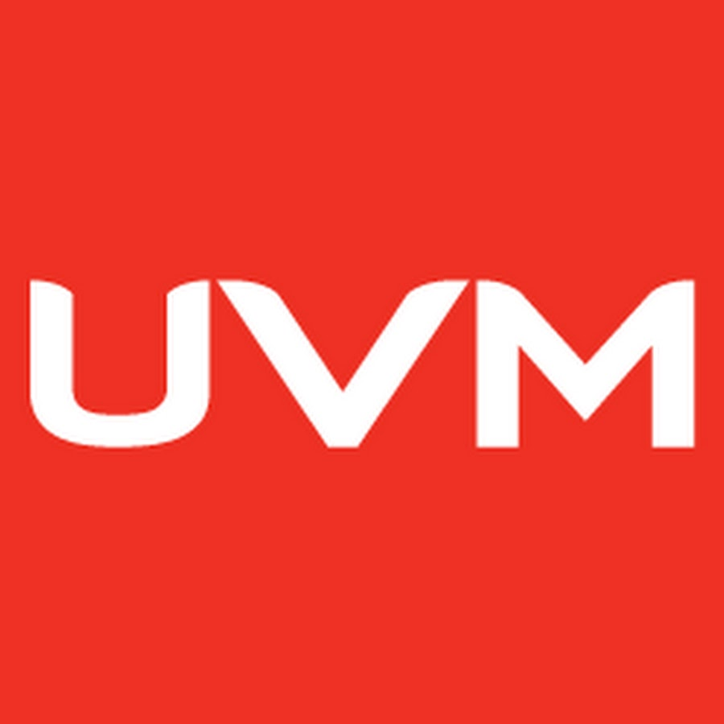

About
Research Associate at the University of Luxembourg.
Graduated with a Bachelor's Degree in Computer Systems from the Autonomous University of Chiapas (UNACH). Master's Degree in Systems Engineering from University of Valle de Mexico (UVM). Master's Degree in Computer and Network Engineering, and PhD in Computer Science from the Polytechnic University of Valencia (UPV).
I have participated in R&D projects related to Community Netwoks, ICT4D, Smart Cities and Internet of Things, designing and developing communication network solutions. My research activity is related to the use of mobile wireless networks for the design of dynamic systems.
Currently, I am a Research Associate at the University of Luxembourg, at the Interdisciplinary Center for Security, Reliability and Trust (SnT), and a member of the Services and Data Management (SEDAN) group.
I consider myself curious about technology, perseverant and collaborative.

Education
-

2018 - 2022
PhD in Computer Science
Polytechnic University of Valencia (UPV).
Valencia, C. Valenciana, Spain.
We developed a messaging system for community networks, based on IoT devices, integrating edge computing and pub/sub technologies. All our advances were published in scientific journals and international conferences. -
2017 - 2018
Master's Degree in Computer and Network Engineering
Polytechnic University of Valencia (UPV).
Valencia, C. Valenciana, Spain.
During the master's degree, I acquired knowledge about IoT, smart cities, high performance networks, computer clusters and embedded systems. In addition, I achieved skills in reading and writing scientific articles. -

2009 - 2011
Master's Degree in Systems Engineering
University of Valle de Mexico (UVM).
Tuxtla Gutierrez, Chiapas, Mexico.
I learned to use effective tools, processes and methodologies to constantly improve processes in organizations. -
2002 - 2006
Bachelor's Degree in Computer Systems
Autonomous University of Chiapas (UNACH).
Tuxtla Gutierrez, Chiapas, Mexico.
Throughout my years at UNACH, I gained general knowledge about hardware, computer networks, system design and administration, databases (MySQL, Oracle) and software development (C++, VB, .NET, PHP).
Experience
My professional activities include the following:
Professional Experience
Research Associate
2023 - Present
University of Luxembourg. Luxembourg, Luxembourg.
- Industrial research, data visualization, digital mapping.
- Development of solutions for smart farming, using microcontrollers and long-range wireless technologies.
- Dissemination of results through scientific articles.
PhD Researcher in Computer Science
2017 - 2022
Polytechnic University of Valencia. Valencia, C. Valenciana, Spain.
- Design and development of a messaging system for community networks.
- Scientific research.
- Dissemination of results through scientific articles.
Full Professor
2015 - 2017
Polytechnic University of Chiapas. Suchiapa, Chiapas, Mexico.
- Teaching classes in Software Development Engineering.
- Advising and tutoring students.
- Project development.
IT Specialist
2008 - 2015
Polytechnic University of Chiapas. Tuxtla Gutierrez, Chiapas, Mexico.
- Implementation of network solutions.
- Software and tools administration.
- Hardware and software troubleshooting.
.NET Developer
2008
Autonomous University of Chiapas. Tuxtla Gutierrez, Chiapas, Mexico.
- Redesign and development of a school control system.
- Database analysis and administration.
Projects
G20 Summit
2012
Cabo San Lucas, Baja California Sur, Mexico.
- Design and implementation of network solutions.
- Resource management.
- Human resources coordination.
VEX Robotics World Championship
2011
Orlando, Florida, EE. UU.
- Resource management.
- Student counseling.
Research
R&D Projects
Wireless sensing using LoRa frequency band.Supported by the Luxembourg National Research Fund (FNR).
Solutions for efficient vehicle traffic management based on network systems and services (SETMAN).Supported by the Ministry of Science and Innovation of Spain and European Regional Development Fund. Under grant: RTI2018-096384-B-I00-AR
Research Groups
Awards
European Alliance for Innovation senior member class of 2021 (EAI).
CONACYT scholarship for doctoral studies.
Journals
A LoRa-based protocol for connecting IoT edge computing nodes to provide small-data-based services.Kiyoshy Nakamura, Pietro Manzoni, Alessandro Redondi, Edoardo Longo, Marco Zennaro, Juan-Carlos Cano, Carlos T. Calafate. In Digital Communications and Networks, Vol. 8, 2022. (pp. 257-266).
I.F. 2020: 6.797; DOI: 10.1016/j.dcan.2021.08.007
LADEA: A Software Infrastructure for Audio Delivery and Analytics.Kiyoshy Nakamura, Daniel Hernández, José M. Cecilia, Pietro Manzoni, Marco Zennaro, Juan-Carlos Cano, Carlos T. Calafate. In Mobile Networks and Applications, Vol. 26, 2021. (pp. 2048-2054). I.F. 2020: 3.426; DOI: 10.1007/s11036-021-01747-z
A Low-cost and Low-Power Messaging System Based on the LoRa Wireless Technology.Angelica Moreno Cardenas, Miguel Kiyoshy Nakamura Pinto, Ermanno Pietrosemoli, Marco Zennaro, Marco Rainone, Pietro Manzoni. In Mobile Networks and Applications, Vol. 25, 2020. (pp. 961-968).
I.F. 2020: 3.426; DOI: 10.1007/s11036-019-01235-5
International Conferences
LoRaCTP: a LoRa based Content Transfer Protocol for sustainable edge computing.Kiyoshy Nakamura, Pietro Manzoni, Marco Zennaro, Juan-Carlos Cano, Carlos T. Calafate. Presented in December 2020. At the 16th International Conference on Mobility, Sensing and Networking (MSN ‘20). (pp. 539-545).
DOI: 10.1109/MSN50589.2020.00090
Integrating an MQTT Proxy in a LoRa-Based Messaging System for Generic Sensor Data Collection.Kiyoshy Nakamura, Pietro Manzoni, Marco Zennaro, Juan-Carlos Cano, Carlos T. Calafate. Presented in October 2020. At the 19th International Conference on Ad Hoc Networks and Wireless (AdHoc-Now 2020). (pp. 282-294).
DOI: 10.1007/978-3-030-61746-2_21
FUDGE: a frugal edge node for advanced IoT solutions in contexts with limited resources.Kiyoshy Nakamura, Pietro Manzoni, Marco Zennaro, Juan-Carlos Cano, Carlos T. Calafate, José M. Cecilia. Presented in September 2020. At the 1st Workshop on Experiences with the Design and Implementation of Frugal Smart Objects (FRUGALTHINGS ‘20). (pp. 30-35). DOI: 10.1145/3410670.3410857
Adding voice messages to a low-cost long-range data messaging system.Kiyoshy Nakamura, Pietro Manzoni, Marco Zennaro, Juan-Carlos Cano, Carlos T. Calafate. Presented in September 2020. At the 6th EAI International Conference on Smart Objects and Technologies for Social Good (GoodTechs ‘20). (pp. 42-47).
DOI: 10.1145/3411170.3411238
A LoRa enabled sustainable messaging system for isolated communities.Angelica Moreno Cardenas, Miguel Kiyoshy Nakamura Pinto, Ermanno Pietrosemoli, Marco Zennaro, Marco Rainone, Pietro Manzoni. Presented in November 2018. At the 4th EAI International Conference on Smart Objects and Technologies for Social Good (GoodTechs ‘18). (pp. 118-123). DOI: 10.1145/3284869.3284888
Other Conferences
Añadiendo mensajes de voz a un sistema de mensajería de datos de largo alcance y bajo coste.Kiyoshy Nakamura, Pietro Manzoni, Carlos T. Calafate, Juan-Carlos Cano, Enrique Hernandez-Orallo. Presented in September 2021. In Sociedad de Arquitectura y Tecnología de Computadores (SARTECO 20/21), at the XXXI Jornadas de Paralelismo (JP20/21). ISBN-13: 978-84-09-32487-3, pp. 405-410.
A LoRa enabled sustainable messaging system for isolated communities.Miguel Kiyoshy Nakamura Pinto. Presented in December 2020. At the 9th Symposium of CONACYT Scholarship Holders in Europe. (CONACYT-MUFRAMEX) pp. 130-133.
Un sistema de mensajería viable para comunidades aisladas basado en LoRa.Kiyoshy Nakamura, Pietro Manzoni, Carlos T. Calafate, Juan-Carlos Cano, Enrique Hernandez-Orallo. Presented in September 2019. In Society for Computer Architecture and Technology (SARTECO 2019), at the XXX Parallelism Conference (JP2019). ISBN-13: 978-84-09-12127-4, pp. 374-380.
Emerging data communication technologies.Kiyoshy Nakamura. Presented in October 2019. At the 6th UNACH International Book Fair 2019 (FIL-UNACH).
Co-authors
Members of the research group and co-authors of my scientific contributions.
Contact info
Location:
Université du Luxembourg, Kirchberg Campus.
Interdisciplinary Centre for Security, Reliability and Trust (SnT).
Services and Data Management Group (SEDAN).
SnT Building. Second floor, E02-208.